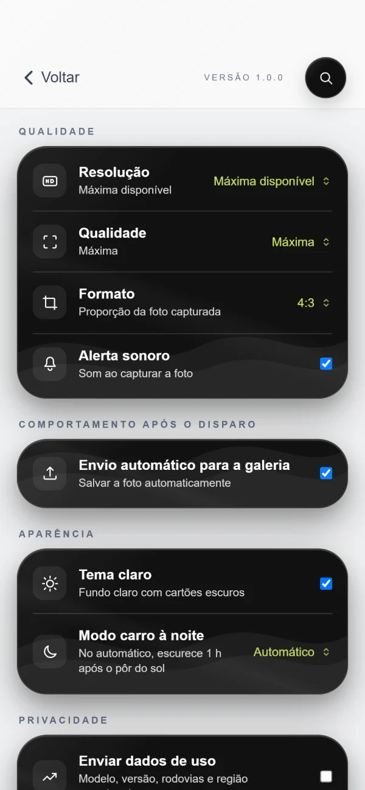
Câmera
- Resolução
- Tamanho da foto. "Máxima disponível" usa o melhor do aparelho.
- Qualidade
- Compressão da imagem. Alta é o equilíbrio entre nitidez e tamanho.
- Formato
- Proporção padrão da foto.
- Alerta sonoro
- Som ao tirar a foto.
Registro fotográfico de rodovias com KM, estaca e coordenadas gravados na própria foto. Direto do campo, sem depender de internet.
Do primeiro uso à primeira foto, em cinco passos.
Em Gestão de Eixo, escolha UF e BR e toque em Baixar rodovia. Precisa de internet só nesse momento.
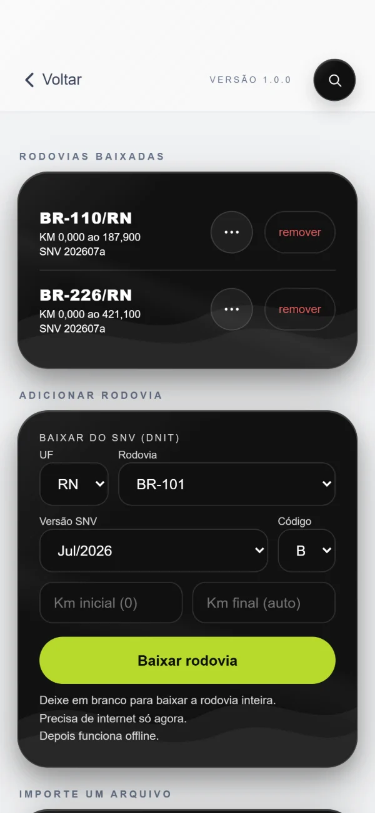
A tela inicial mostra a rodovia, o KM e a estaca do ponto onde você está, pelo GPS.
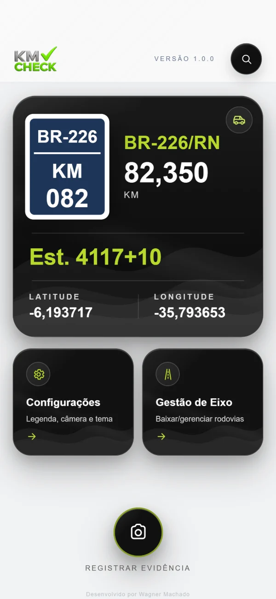
Toque em Registrar evidência. Marque o lado (LD ou LE) e, no botão i, o serviço e o contrato.
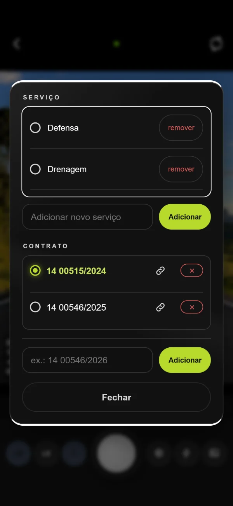
Toque no obturador. A legenda com rodovia, KM, estaca, coordenadas e data é gravada na imagem.
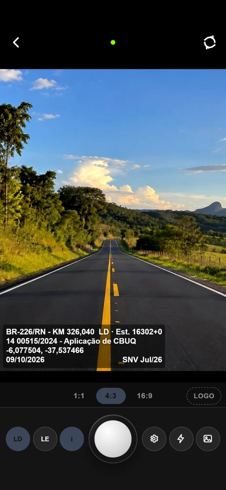
A foto vai para a galeria do celular e fica guardada também na galeria do app.
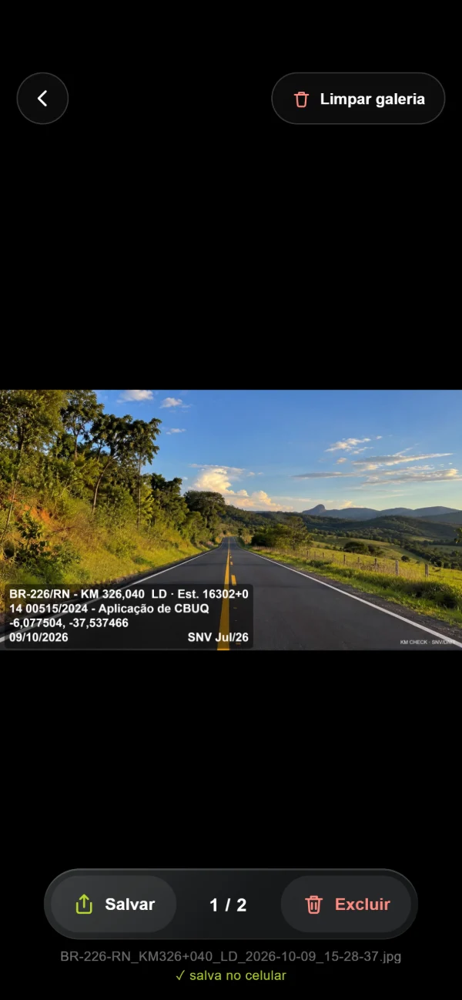
É o painel de campo. Assim que o GPS encontra sua posição, o app procura a rodovia mais próxima entre as que você baixou e mostra o KM exato.
BR e quilômetro inteiro, no mesmo estilo das placas da rodovia.
A rodovia onde você está agora.
Quilômetro com metros, em três casas decimais. Fica vermelho quando você está longe do eixo.
Estaca do ponto, a cada 20 m. A rodovia pode ter um zero próprio por lote.
Coordenadas lidas do GPS do celular.
Abre a tela de painel para acompanhar o KM dirigindo.
Converte coordenadas em KM e KM em coordenadas.
Câmera, logo, legenda, aparência, serviços e contratos.
Baixar, importar e gerenciar as rodovias do celular.
Abre a câmera para tirar a foto com legenda.
O KM só aparece se a rodovia estiver baixada no celular. Sem rodovia por perto, a placa fica com tracinhos.
Aqui ficam as rodovias que o app usa para calcular o KM. Você pode baixar do SNV/DNIT ou importar um arquivo de qualquer rodovia: federal, estadual ou municipal.
Para baixar, escolha UF, BR, versão do SNV e o código do trecho. Deixe os km em branco para baixar a rodovia inteira.
Nome, trecho de KM e origem dos dados, com a versão do SNV.
Estaca e trechos coincidentes. O ponto verde avisa que há ajuste.
Tira a rodovia do celular.
Abre o seletor de arquivos do celular.
Arquivo .shp com .dbf, ou o .zip. De qualquer órgão.
KMZ, KML ou GPX. A linha da estrada ou marcos de km.
Excel ou CSV com KM, latitude e longitude. Aceita UTM.
Arquivos exportados do AutoCAD trazem o desenho inteiro do projeto. O app mede as linhas e já marca o Eixo provável.
Nome livre: BR-110, RN-118 ou o nome da estrada.
O app explica o que encontrou e o que falta.
Quilômetro da ponta onde a linha começa.
Escolha a ponta A ou B, marcadas no desenho.
Traçado, extensão medida e trecho final.
Nome do trecho, zero da estaca e contrato.
Mostra o trecho baixado, a estaca em uso e os trechos onde duas rodovias usam o mesmo traçado. Nesses trechos você escolhe qual vale para o KM e a legenda.
A estaca automática é contada desde o km 0, a cada 20 m. Para lotes com estaqueamento próprio, defina o zero: o KM onde começa e a estaca dele.
Os ajustes ficam em três abas: Câmera, Logo e Legenda. Eles valem para todas as próximas fotos.

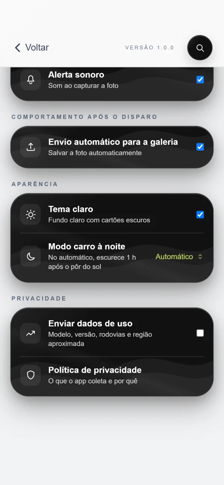
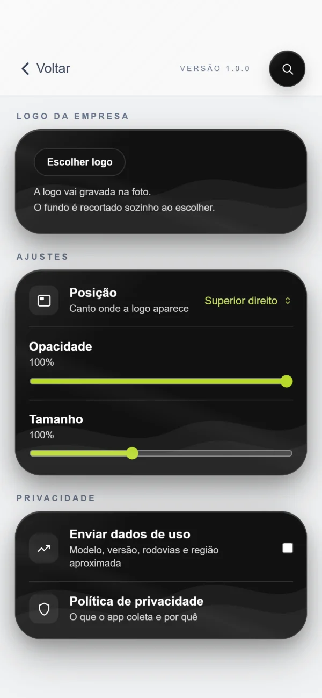
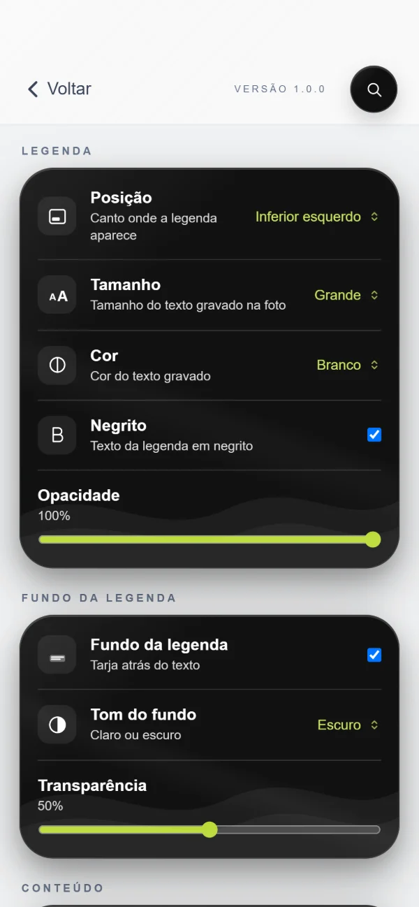
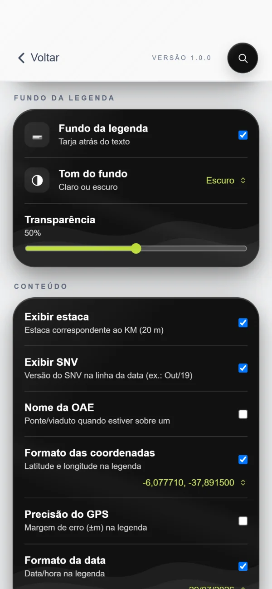
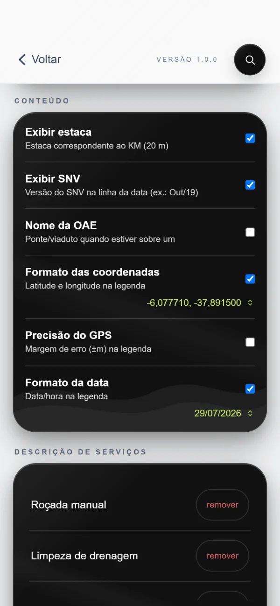
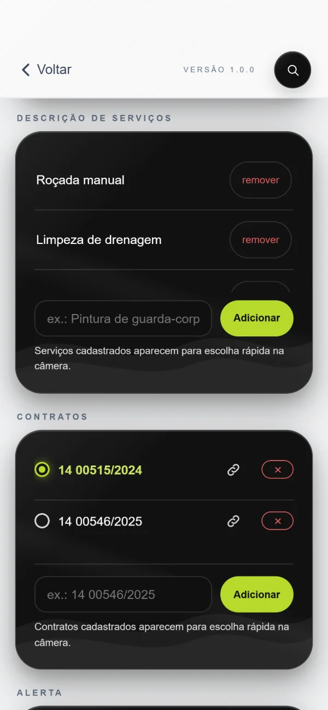
Cadastre os contratos e vincule cada um ao trecho de rodovia em que ele vale. Dentro do trecho, o contrato entra sozinho na legenda.
Toque num contrato para usá-lo. A corrente abre os vínculos, AUTO liga ou desliga o automático daquele contrato e o X remove. A chave Automático, embaixo, liga todos os vinculados de uma vez.
Escolha a rodovia em que o contrato vale. Um contrato pode ter vários trechos, em rodovias diferentes.
Informe o km inicial e o final, ou use o segmento todo. Escolher um contrato à mão pausa o automático, para o app não trocar o que você escolheu.
A câmera mostra a legenda ao vivo, exatamente como ela será gravada na foto. Tudo o que você ajustar aqui aparece na legenda antes de tirar a foto.
Fecha a câmera e volta para a tela inicial.
Verde é sinal forte, amarelo é fraco e vermelho é sem sinal.
Alterna entre a câmera traseira e a frontal.
Rodovia, KM, lado, estaca, contrato, serviço, coordenadas e data.
Formato da foto: 1:1, 4:3 ou 16:9.
Liga ou desliga a logo da empresa na foto.
LD (direito) ou LE (esquerdo). Toque de novo para tirar o lado.
Escolha o serviço executado e o contrato da foto.
Tira a foto.
Atalho direto para os ajustes.
Liga o flash da câmera traseira, quando o aparelho permite.
Abre as fotos registradas no app.
No botão i você escolhe o serviço e o contrato que vão na segunda linha da legenda. Dá para cadastrar novos aqui mesmo, sem sair da câmera. Contratos vinculados a uma rodovia entram sozinhos quando você chega no trecho.
Gire o celular e a câmera acompanha. A legenda e os botões se reorganizam para a foto na horizontal.
Sem GPS ou com o sinal muito impreciso, o app bloqueia a foto e avisa. Assim nenhuma evidência sai com localização errada.
Cada foto sai com a legenda gravada na própria imagem e com a localização também nos dados do arquivo. Veja o que cada linha significa.
A legenda vai gravada na própria imagem, no canto que você escolher.
Rodovia e UF, KM com metros, lado da pista e estaca. Longe do eixo, aparece ⚠ no fim.
Contrato e serviço. Sobre uma ponte ou viaduto, mostra também o nome da OAE.
Coordenadas no formato escolhido, com a precisão do GPS se você quiser.
Data da foto e a versão do SNV usada no cálculo do KM. A hora também pode aparecer.
BR-226-RN_KM326+040_LD_2026-10-09_15-28-37.jpg. Rodovia, KM, lado, data e hora no nome, e a localização também nos dados da foto. Este é um modelo de exemplo: você escolhe o que aparece, a posição, a cor e o fundo.
Todas as fotos ficam guardadas também dentro do app, mesmo depois de salvas no celular. Use a galeria para conferir, salvar de novo ou compartilhar.
Fecha a galeria.
Apaga do app só as fotos que já estão salvas no celular.
Salva ou compartilha a foto aberta.
Número da foto e total de fotos no app.
Apaga a foto do app. A cópia do celular continua lá.
Nome do arquivo e se a foto já está salva no celular.
Arraste para os lados para trocar de foto. Dois toques ou o movimento de pinça dão zoom.
Para quem trabalha com planilhas. Converta uma lista de coordenadas em KM, ou um KM em coordenada, usando as rodovias baixadas.
Em KM → Coordenada, escolha a rodovia e digite o KM para ver a latitude e a longitude.
Cole uma por linha. Pode copiar direto do Excel.
Encontra a rodovia e o KM de cada ponto.
Acrescenta a sua posição atual na lista.
Rodovia, KM e distância até o eixo.
Copia a tabela pronta para colar no Excel.
Uma tela de painel para acompanhar a rodovia dirigindo, com o celular no suporte. O KM fica grande, a tela não apaga e a estrada ao fundo anda na velocidade do carro.
Fecha o Modo Carro.
BR e KM inteiro.
Quilômetro exato, atualizado pelo GPS.
Barra e metros que faltam para o próximo quilômetro.
Estaca do ponto atual.
Precisão do sinal em metros.
Contrato ativo no trecho.
Crescente ou Decrescente, pelo sentido em que o KM está mudando.
Latitude e longitude no formato da legenda.
No automático, a tela escurece 1 hora depois do pôr do sol e clareia no nascer do sol. O horário é calculado pela sua posição, sem internet. Em Configurações você pode deixar sempre claro ou sempre escuro.
Com o celular na horizontal, o KM fica à esquerda e os outros dados à direita.
As situações mais comuns no campo e o que fazer em cada uma.